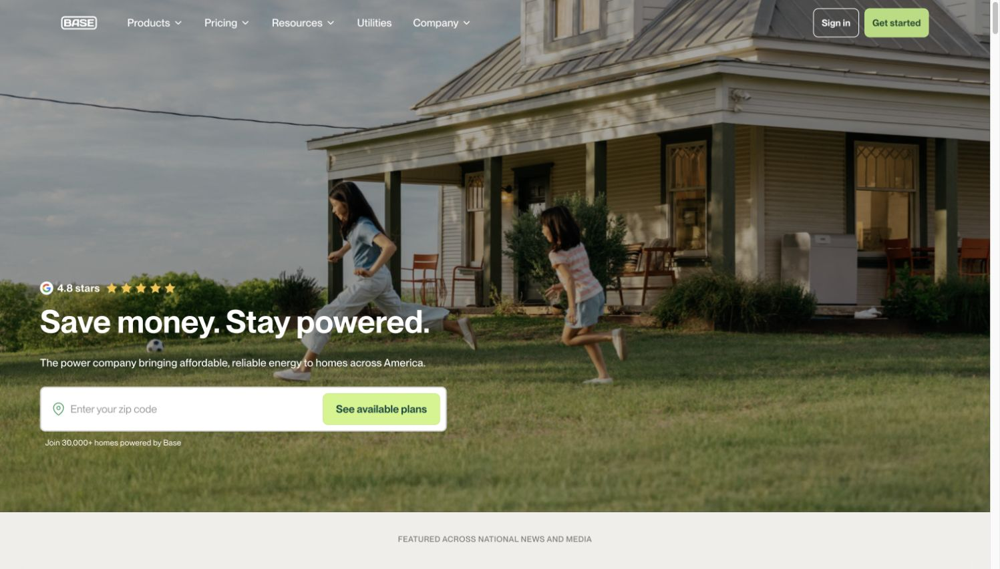
REFERENCE 01
Homepage hero
Full-bleed domestic photography, white overlay type, lime conversion action, compact trust cues.
Open full image ↗A reusable visual and implementation reference for Base Power: measured tokens, original brand assets, and 17 real desktop and mobile captures.
Start here for visual orientation. The written guide explains how each feature is composed, what was verified, and how to reproduce its behavior.
Independent reference, not an official brand manual. This gallery uses system fonts; the captured site uses PP Neue Montreal.
The core palette comes directly from production CSS. Warm neutrals carry most surfaces; forest green establishes the brand; light lime calls attention to the next action.
#1E4D2BBrand text and dark panels#B2DD79Primary action fill#F0EEEBPage canvas#292826Default text#FFFFFFRaised surfaces / inverse text#ED6C30Rail progress / editorial accent#F7C33CRating stars#048EE5Secondary illustration accentPP Neue Montreal is the principal family. Most observed headings are semibold with neutral tracking. Clarendon Wide and Dahlia Blues are declared secondary families; script is reserved for editorial touches.
Values at desktop size. Mobile homepage H1: 40 / 44px. Do not confuse the legacy heading tokens with the current utility classes.
Logo paths are extracted from the public site's inline SVG. These standalone color variants were normalized locally; they are not presented as an official downloadable brand kit.
Hero photograph · Grid-on illustration · Grid-off illustration · Tape texture
Click any capture for its full-size local file. Some captures contain a slim browser-extension reading toolbar; that toolbar is not part of Base's design. Transitional Core captures are labeled explicitly.

Full-bleed domestic photography, white overlay type, lime conversion action, compact trust cues.
Open full image ↗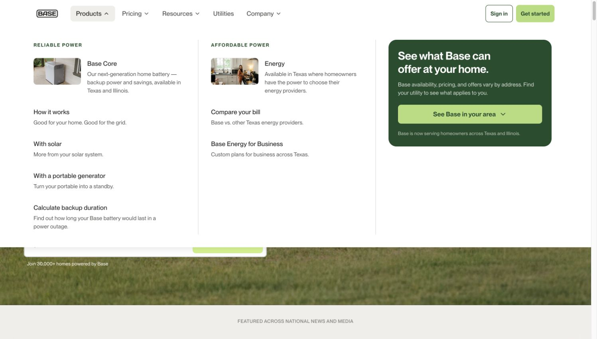
White mega menu, thin column dividers, descriptive links and a dark-green availability panel.
Open full image ↗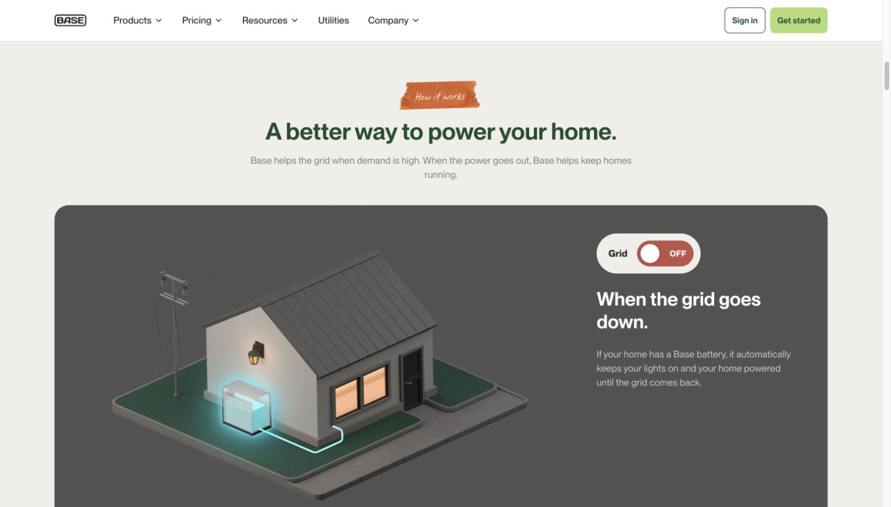
The illustration, panel tone, label, heading and description switch as a single state.
Open full image ↗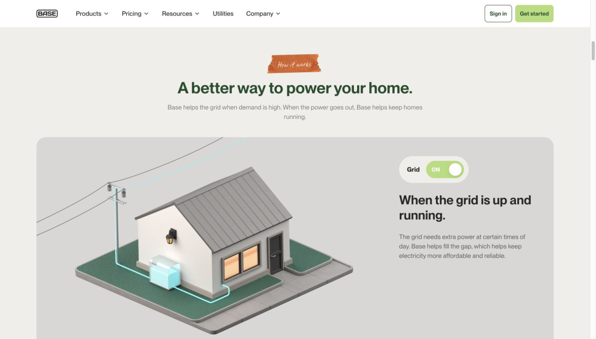
Compare with the off state: brighter environment and green status indicator.
Open full image ↗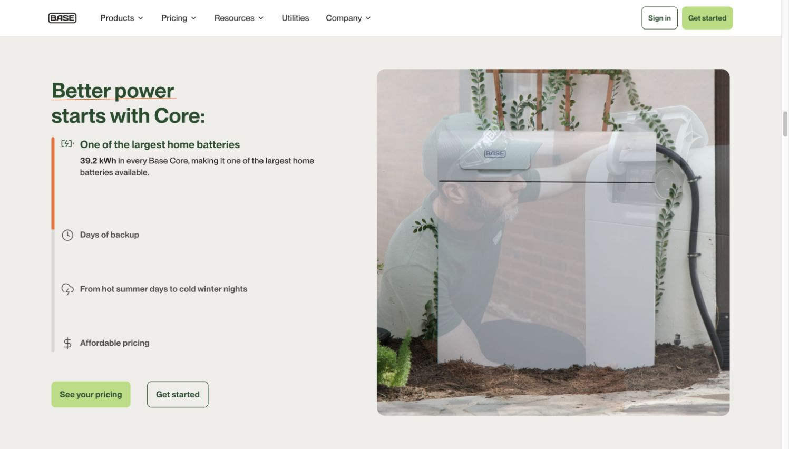
Sticky two-column story with image crossfades, active feature copy and an orange progress line. Captured during transition.
Open full image ↗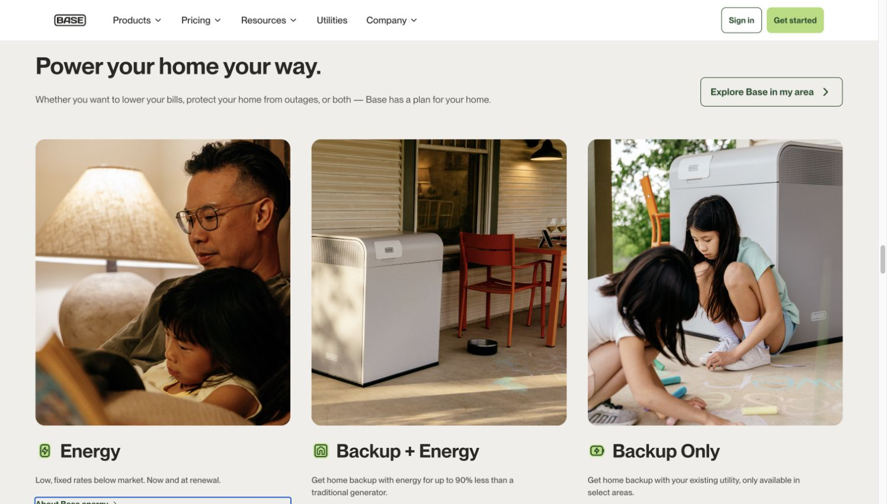
Open three-column cards on the warm canvas. Rounded media, category glyph, heading, short body and text CTA.
Open full image ↗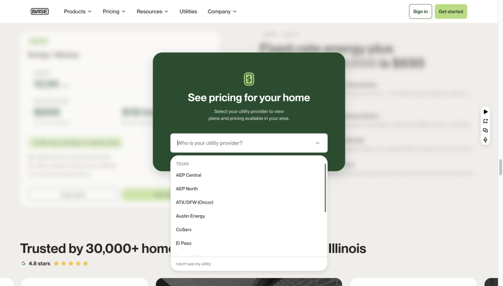
In-section blurred pricing preview with an inset green prompt and grouped white listbox.
Open full image ↗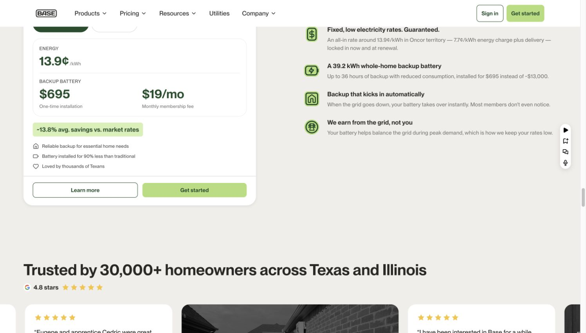
Plan card distinguishes rate, installation and recurring fee; benefit copy sits beside it. Historic pricing example.
Open full image ↗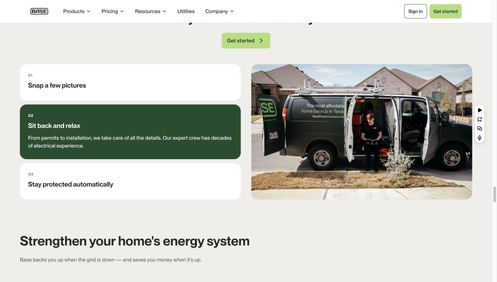
The selected numbered panel expands, turns green and changes the linked image.
Open full image ↗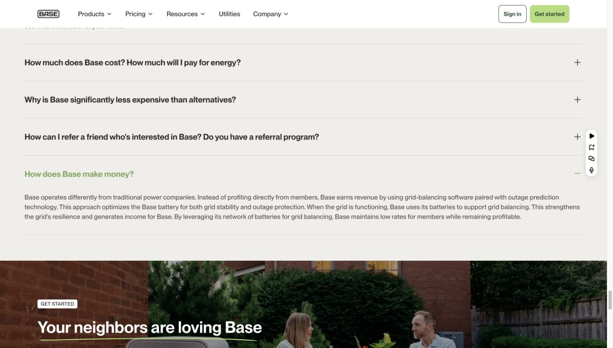
Thin rules, broad text rows and a trailing expand/collapse control. One answer shown open.
Open full image ↗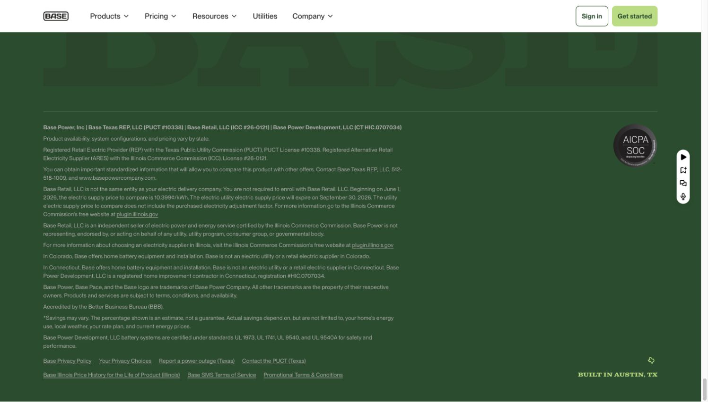
Deep green background and compact inverse legal copy. This capture is the lower footer region.
Open full image ↗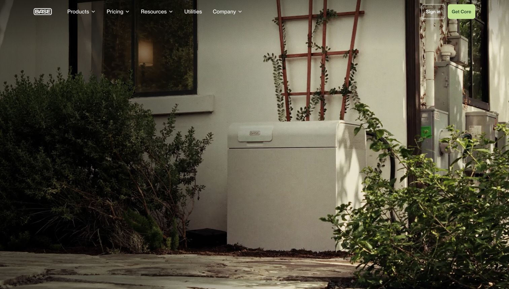
Immersive product-in-context imagery; captured at the opening media state.
Open full image ↗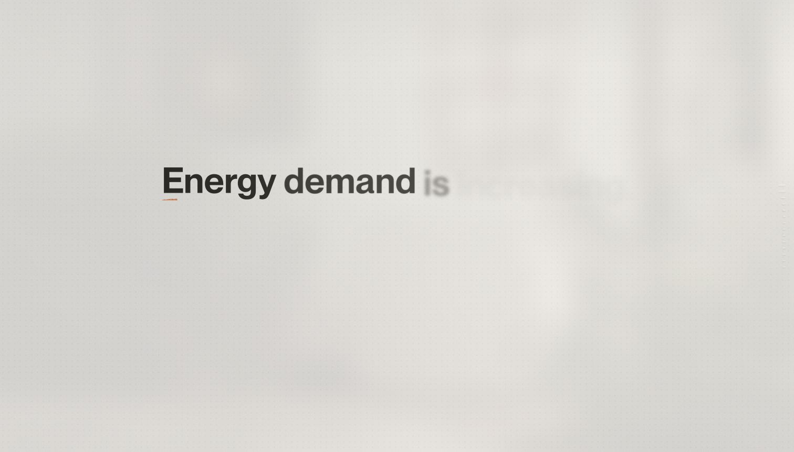
Textured warm surface, oversized sans-serif words and orange underline. Captured partway through reveal.
Open full image ↗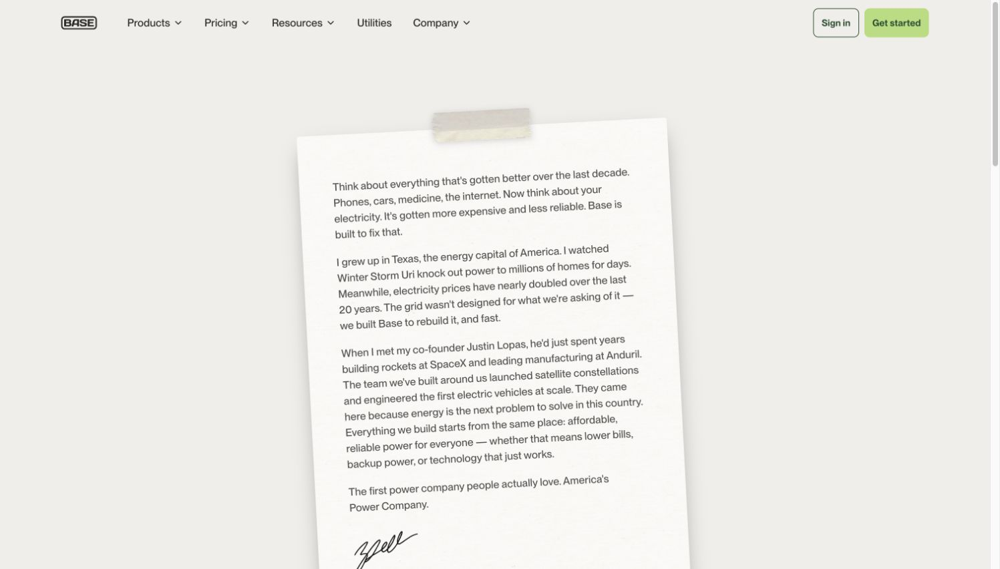
Angled paper, tape, texture and a signature introduce a personal editorial mode.
Open full image ↗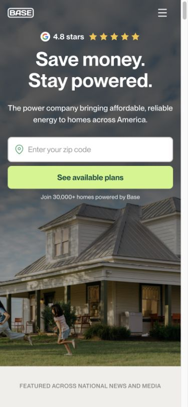
Centered headline and stacked form controls; the image preserves room for the house below.
Open full image ↗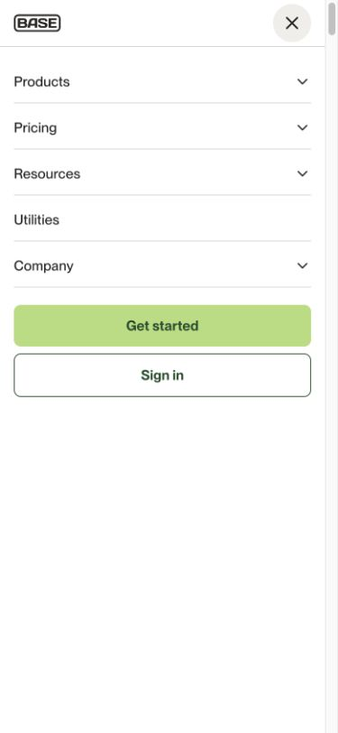
Stacked categories, full-width actions, compact logo and close button.
Open full image ↗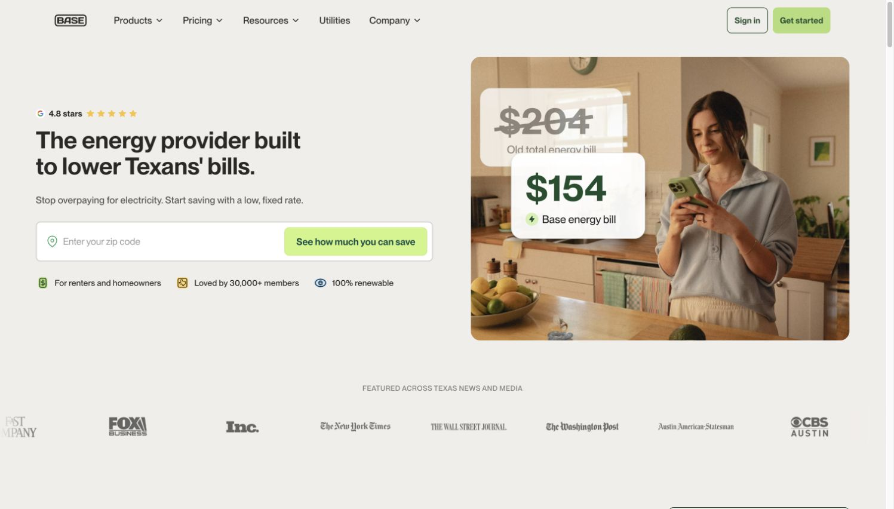
Text/form on the left, a rounded domestic image and bill-comparison graphics on the right.
Open full image ↗Complete style guide · Color JSON · Computed styles · Feature rail CSS · Source and capture index
All screenshots are actual browser captures. Original assets remain owned by their respective rights holders. This folder records a dated reference and does not grant reuse rights or imply endorsement.